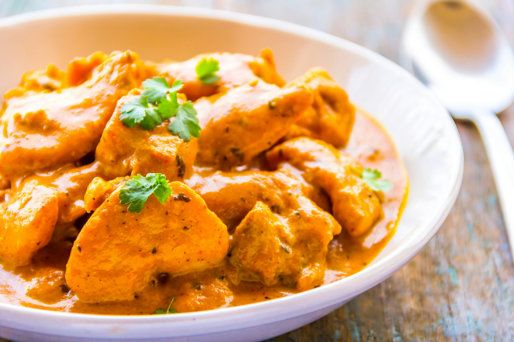
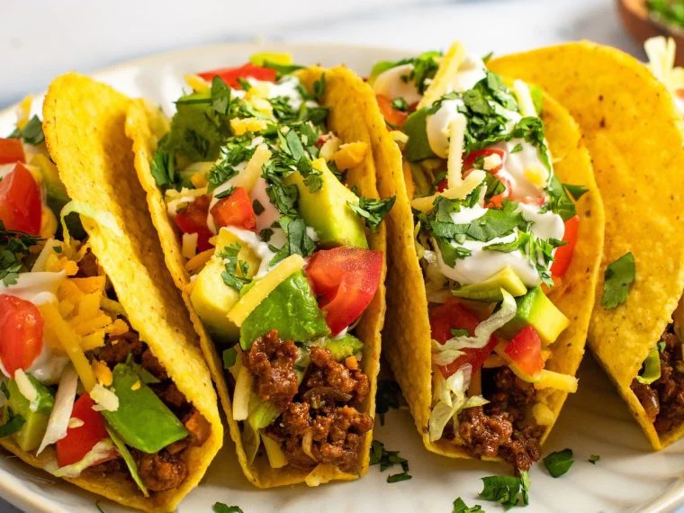

Butter Chicken
Butter chicken is a type of curry made from chicken cooked in a spiced tomato and
butter (makhan)-based gravy. The gravy is typically known for its rich texture. It is similar to chicken tikka masala, which uses a tomato paste.
The dish originates in Delhi, India. Recipe

Tacos
A taco is a traditional Mexican dish consisting of a small, hand-held tortilla,
typically made of corn or wheat, filled with various ingredients and toppings. Tacos are a popular form of street
food and are widely enjoyed both in Mexico and around the world. Recipe

Spaghetti
Spaghetti is a long, thin, cylindrical pasta of Italian origin. It is made from
wheat semolina and water, and is typically served with a variety of sauces, such as marinara, meat sauce, or pesto.
Spaghetti is one of the most popular types of pasta worldwide. Recipe